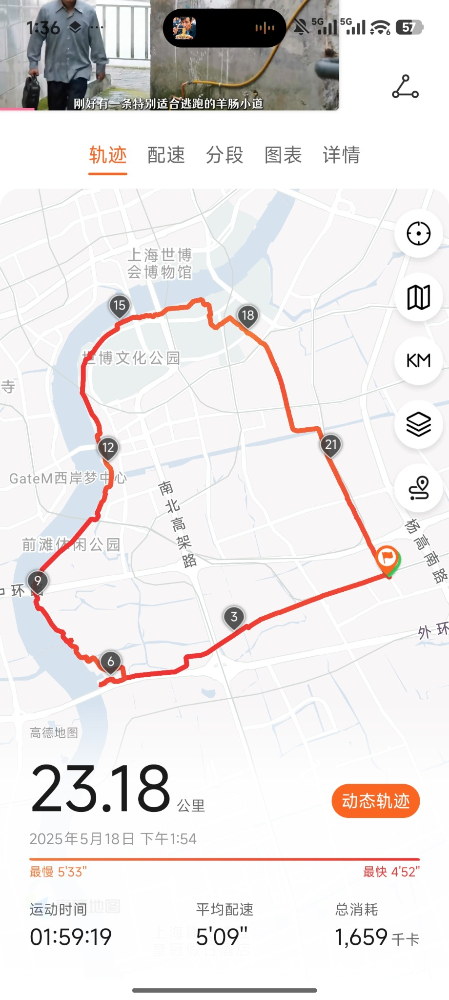
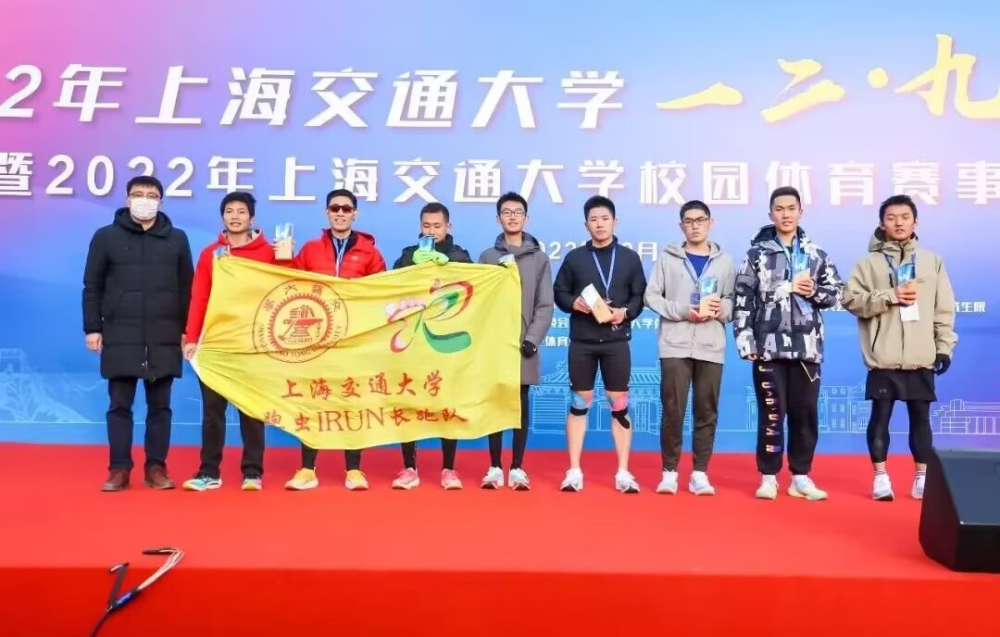

Yuanye LinCharting galaxy histories through their chemistry.
I am a PhD candidate in astronomy at Shanghai Jiao Tong University, advised by Prof. Ying Zu. I study galaxy chemical evolution and the baryon cycle, focusing on gas accretion, galactic outflows, and metal enrichment. I investigate how these processes depend on galactic environment within the cosmic web.
My work connects DESI and SDSS observations with chemical evolution models and cosmological simulations. I also use DESI luminous red galaxies as background probes to map Milky Way dust.
Using spectroscopic surveys to investigate galaxy chemical evolution and construct Milky Way dust maps.
01
Chemical evolution · Model development
NE-CEM: modeling the chemical evolution of galaxies
We developed the non-equilibrium chemical evolution model (NE-CEM) to explain how galaxies enrich their gas over time. By connecting chemical enrichment with the histories of star formation and gas flows, the model reconstructs the observed relationship between stellar mass, star formation rate, and gas-phase metallicity in SDSS galaxies—the fundamental metallicity relation (FMR).
Constraining galactic outflows is one application of this framework. We use NE-CEM to infer outflow mass-loading factors and examine their dependence on galaxy properties, with comparisons to independent observational constraints.
Reconstructing the SDSS fundamental metallicity relation. Open circles show SDSS measurements; solid curves show the best-fit NE-CEM. Colors distinguish stellar-mass bins. The model reconstructs the fundamental metallicity relation in SDSS. Lin & Zu (2023; preprint 2022). Click the figure to enlarge.
Our 2026 preprint uses DESI and EAGLE to study satellite metallicity enhancement around massive clusters. A chemical evolution model separates the contributions of suppressed star formation, stellar mass loss, and enriched inflow.
Follow-up: Satellite Metallicity Enhancement II
In a follow-up manuscript, I measured how the enhancement depends on halo mass, stellar mass, and star formation rate, and interpreted these trends using the physical picture established in SME I.
Manuscript completed; preparing for DESI collaboration review. Not yet publicly released.
Decomposing satellite metallicity enhancement. Colored components show the contributions from suppressed star formation, stellar mass loss, and enriched inflow. The total NE-CEM prediction (black curve) is compared with EAGLE measurements (open circles). Lin et al. (2026), right-hand panel. Click the figure to enlarge.Read the preprint ↗
In ongoing work, I use DESI luminous red galaxies (LRGs) as “standard crayons” to map Milky Way dust. Their calibrated intrinsic colors provide a reference for measuring dust reddening along extragalactic sightlines. The method also allows us to measure RV and constrain the dust extinction curve.
Ongoing extension: foreground gas kinematics with Na I D
I have made initial measurements of foreground absorption velocities across the DESI footprint using Na I D. This early-stage work uses absorption-line equivalent widths and velocities to investigate the gas associated with Galactic dust, with the aim of constraining its column density and spatial distribution.
Mapping Milky Way dust with DESI LRGs. The map shows foreground reddening, E(B − V), measured using luminous red galaxies as background probes. The color scale indicates the inferred reddening across the DESI footprint. On large angular scales, the map agrees with the SFD map and stellar-based reddening measurements. Galactic Extinction and Reddening from DESI Luminous Red Galaxies. Under DESI collaboration review. Click the figure to enlarge.Contact me about this work ↗
02 / Publications
Selected first-author papers.
Journal articles and public preprints.
2026Preprint
Satellite Metallicity Enhancement I: Stellar Mass Loss, Suppressed Star Formation, and Enriched Inflow in EAGLE and DESI Cluster Galaxies
Lin, Y., Zu, Y., et al.
Submitted to ApJ; response to referee comments in preparation. arXiv:2605.08342 (earlier title).
Galaxy evolution, the baryon cycle, and Milky Way dust.
How has the baryon cycle evolved across cosmic time?
I would like to combine observations from JWST, PFS, and DESI to measure the fundamental metallicity relation (FMR) at different redshifts. Interpreting these measurements with NE-CEM could help reconstruct the histories of galaxy evolution and the baryon cycle.
How does the cosmic web shape galaxy evolution?
By classifying galaxies according to their environments within the cosmic web and using NE-CEM to infer their evolutionary histories, I aim to investigate how environment influences galaxy chemical evolution and the baryon cycle.
What does the baryon cycle look like within individual galaxies?
I am interested in using spatially resolved integral-field spectroscopy from MaNGA and future instruments such as CSST-IFS to investigate gas accretion, galactic outflows, and chemical enrichment within individual galaxies.
What can background spectra reveal about Milky Way dust and its associated gas?
DESI BGS, LRG, ELG, and QSO spectra offer background sightlines for studying foreground Ca II H&K and Na I D absorption. I would like to combine absorption-line velocities and equivalent widths with reddening measurements to constrain gas column densities and investigate the kinematics and spatial distribution of gas associated with Milky Way dust.
04 / Background
About me.
2017 – 2021
BSc in Physics
Zhiyuan College, Shanghai Jiao Tong University
2021 – Present
PhD candidate in Astronomy
Shanghai Jiao Tong University
Advisor: Prof. Ying Zu
September 2025 – September 2026
Intern Student
University of Utah, USA
Hosts: Zheng Zheng and Kyle Dawson
Beyond astronomy
How I clear my mind
Outside research, I enjoy jogging, cycling, and hiking. Time outdoors helps me clear my mind.

A run around Pudong, Shanghai.

6th place in a 10 km race at Shanghai Jiao Tong University.
05 / Contact & CV
Let’s talk about galaxies.
For research discussions, collaborations, or postdoctoral opportunities, please get in touch.